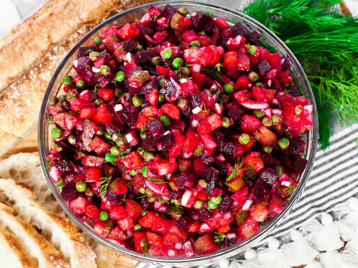

Vinaigrette Beet Potato Salad

Description
The popular “Vinaigrette” salad is a staple dish in the Eastern European cuisine.
It’s a potato salad that’s loaded with delicious, sweet beets and dill!
Enjoy this salad as a side dish with meats or by itself with some baguette!
Ingredients
- 3 large potatoes
- 3 large beets
- 6 to 8 large carrots
- 8 small pickles, diced
- 2 large shallots or 1 small red onion, diced
- small bunch of fresh dill, chopped
- 1 cup sweet peas
- 0,25 cup extra-virgin olive oil
- 2 to 3 tablespoons white vinegar
- salt and pepper, to taste
Steps
- Preheat the oven to 375F. Line a large baking sheet with foil, parchment paper or a silicone mat. Peel the carrots but leave the potatoes and beets unpeeled; cut the beets in half.
Place vegetables onto prepared pan and cover with foil, sealing the pan tightly.
- Bake in preheated oven until vegetables are fork-tender; about 25 minutes for carrots, up to 45 minutes for beet and potatoes.
To cook the beets faster, wrap them individually in foil and seal tightly.
- Once the vegetables have cooked, remove them from the oven and cool completely; they will be extremely hot out of the oven!
Peel the potatoes and beets and dice into pea-sized pieces. Dice the carrots, pickles and shallot.
I used frozen sweet peas and thawed them in hot water; canned peas will also work.
- Combine all of the vegetables and dill in a large bowl; add the sauerkraut if desired. Season generously with salt, olive oil and vinegar.
Toss all ingredients together until well combined. Refrigerate if not serving immediately.
- For a creamy version, use approximately 1/2 to 3/4 cup mayonnaise, plus 2 to 4 tablespoons of sour cream.